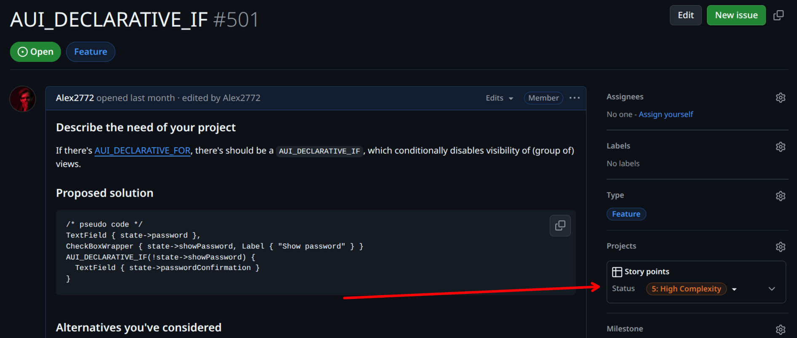

Contributing to AUI#
AUI is maintained by 1 developer so community help and contributions are heavily appreciated. Here's some helpful information.
Becoming a contributor#
- Follow AUI's code style.
- Anyone may become an AUI contributor: there are no restrictions.
- Tasks and todos are listed on the GitHub Issues page. Issues marked
as
good first issueare relatively simple and can be done without deep dive into AUI. - AUI follows git flow-like branching model.
masterbranch is a release candidate branch.developbranch is current develop branch. Each feature of the framework is created in a separate branch fromdevelopin thefeat/folder. pulling changes from your branch todevelopis possible only if the merge with your branch does not generate merge conflicts and does not break the build and tests.
That is, if you want to implement a feature, you should fork AUI's repository (if you don't have direct access to
it's repository), checkout the develop branch and create a new branch called feat/feature-name, where you work
under your feature.
When you have finished your work, you should open a pull request from the feat/feature-name branch of your
repository to the develop branch of the AUI's original repository.
5. Contributing to AUI, you agree that your code will be released under
AUI's license.
Workflow#
master branch contains code of the release candidate. Code of this branch must compile without errors and should pass
all tests on all supported platforms.
Each feature of the framework is created in a separate branch in the feat/ folder. Pulling changes from your branch to
master is possible only if the merge with your branch does not generate merge conflicts and does not break the build
and tests.
Merges from feat/ branch are allowed only to develop branch. develop is the branch were our actual development
work happens. When we consider develop branch stable enough, we merge develop and master and create a release.
If you are an external developer (i.e., have no write access to AUI's repository), you will need to create a fork of AUI
and commit to it. Whilst you can commit to master and develop branches of your own repository, we still recommend to
follow feature branch workflow. After you finished your work in your feature branch, open pull request from your feature
branch to AUI's develop branch.
AI#
We'd happily accept your AI-assisted work, as soon as you take complete responsibility thereof, and you have complete understanding of the changes you propose. Make sure your AI-assisted work does not violate someone's copyright. Please manually review and adjust AI-generated code/documentation. We won't merge changes if they contain obvious AI traces:
- hallucinations
- AI assistant-specific unnecessary statements: "I'm happy to help", "Please let me know if you have questions", etc
- overexplanation, repetitive points, fluff writing
- excessive usage of bullet points: nobody writes a page filled with bullet points entirely but AI
Please treat AI as a tool, not as a complete replacement of a software engineer.
Understanding Story Point Values#
Story points are designed as relative measurements of work complexity, deliberately decoupled from time-based metrics ( hours/days/weeks). They provide a general indication of effort required for task completion. It's important to note that story point comparisons across different teams, departments, or organizations are inherently invalid.

For example, Team A's 100-point sprint delivery might represent more actual work than Team B's 200 points, as each team develops their own story point scale. While this guide isn't meant to standardize story points globally, it offers internal guidelines for consistent estimation.
Note: All stories include standard overhead for PR reviews, test verification, and deployment processes. This overhead should be factored into estimates and can sometimes exceed the time needed for the primary task.
This section explains how story points are assigned to tasks in the AUI framework project and their relationship to developer compensation.
Financial compensation#
The number of story points assigned to a GitHub issue in the AUI repository directly determines the financial compensation paid to the external developer who successfully resolves that issue.
For information about getting in touch regarding compensation, please refer to the contact details provided in our README. Pick a task which you want to resolve before contacting.
1 Point - Minimal Complexity#
These represent the simplest possible changes. They involve single-line or minimal code modifications, such as text corrections or content updates. Tasks typically involve simple configuration value modifications with no logic alterations or risk of breakage. There are no external dependencies, and all necessary information is self-contained within the ticket. The changes are covered by existing tests or basic smoke testing, with no test updates required.
2 Points - Low Complexity#
These tasks represent approximately double the effort of a 1-point story. They may include minor third-party dependency updates with API adjustments and basic method refactoring without output changes. New test creation might be necessary. External dependencies are straightforward, such as Docker image whitelisting, and follow clear documentation or known processes.
3 Points - Moderate Complexity#
This is the first level where significant uncertainty enters the picture. These tasks require a notable but manageable time investment and may involve multiple external dependencies. They often include major version updates of libraries with breaking changes. Some cross-team communication is required, though clarifications can typically be resolved through a single call or chat. This represents the upper range of typical story size.
5 Points - High Complexity#
These stories are an extended version of 3-point complexity, involving a substantial workload with multiple unknowns to resolve. They often include significant breaking changes across components and require extensive test modifications. Multiple cross-team meetings are likely necessary, and broader stakeholder involvement is common.
8 Points - Very High Complexity#
This represents the maximum reasonable scope for a single sprint. These stories involve major system changes or refactoring, new integrations, or complete rewrites. They come with significant unknowns at the start and should be considered for splitting into smaller stories. Examples include framework migrations or major library updates. Requirements often have high uncertainty.
13+ Points - Excessive Complexity#
Stories of this size exceed single sprint capacity and typically require multiple sprints to complete. They contain too many unknowns and variables, carrying a high risk of underestimation. Such stories should be split into smaller components or converted to epics. Examples include full API integrations or complete rebranding projects. These large-scale changes are too complex to estimate accurately and manage effectively within a single sprint.
Guides#
Creating an AUI module#
Suppose whe want to create a module called aui::my_module:
- In the main
CMakeLists.txt:- Find the
# define all componentsanchor, putdefine_aui_component(my_module). - Find the
# all components for exportinganchor, putmy_moduletoAUI_ALL_COMPONENTS.
- Find the
- If
aui::my_modulehas external dependencies, handle them at# add dependenciesincmake/aui-config.cmake.in. - Put the reference to the module in
docs/index.md. - Create
aui.my_moduledir. - Copy & paste
CMakeLists.txtfrom any small module (i.e.aui::xml) and configure it for your module. - Use
API_AUI_<your module>to export symbols from your module (it's created by theaui_moduleCMake function).
Documentation#
The docs found on aui-framework.github.io is generated with MkDocs.
To generate documentation, run the following command from the root of AUI repository:
Note
These commands are not tested on Windows.
git clone https://github.com/aui-framework/aui
cd aui
git checkout develop # we do development on develop branch only
# if you want to use venv
python3 -m venv .venv
source .venv/bin/activate
# only for the first time
python3 -m pip install -r docs/python/requirements.txt
# generate docs
mkdocs serve --use-directory-urls
After the command is complete, you can visit docs at http://127.0.0.1:8000/.
In our pipelines, we use --strict flag to treat warnings as errors. If warnings were produced during generation, the
CI/CD pipeline wouldn't pass.
Most functionality is provided by Material for MkDocs theme. In addition to md files found in docs/ dir, we have
several python scripts to populate documentation:
docs/python/hooks.py- handles XML comments.docs/python/doxygen.py- handles Doxygen-style documentation found in our C++ code. Doxygen, as the tool, does not participate in our documentation generation. We still use Doxygen style to maintain compatibility with documentation readers in IDEs.docs/python/examples_page.py- generates pages related to examples.